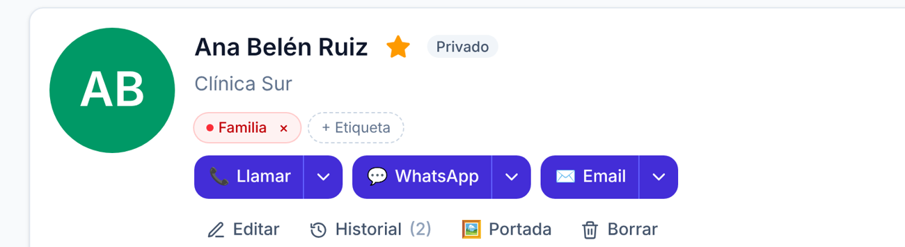
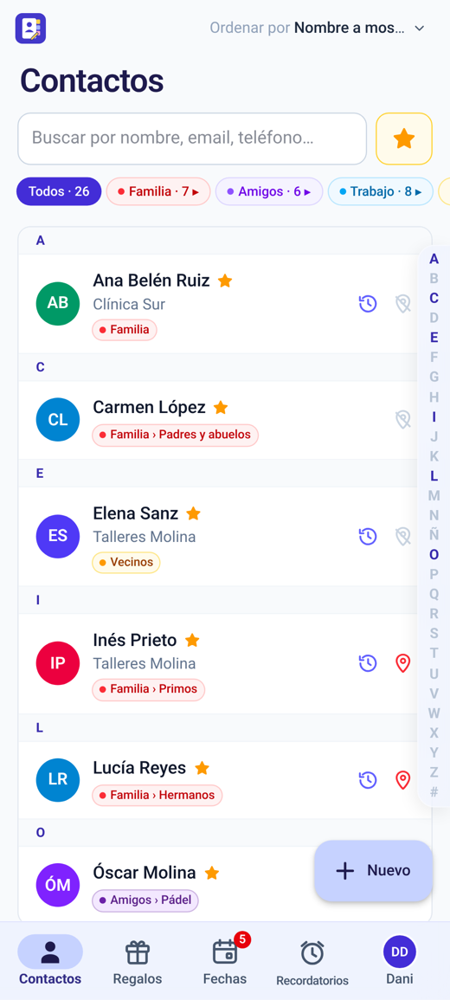
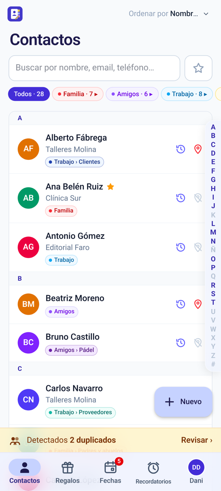
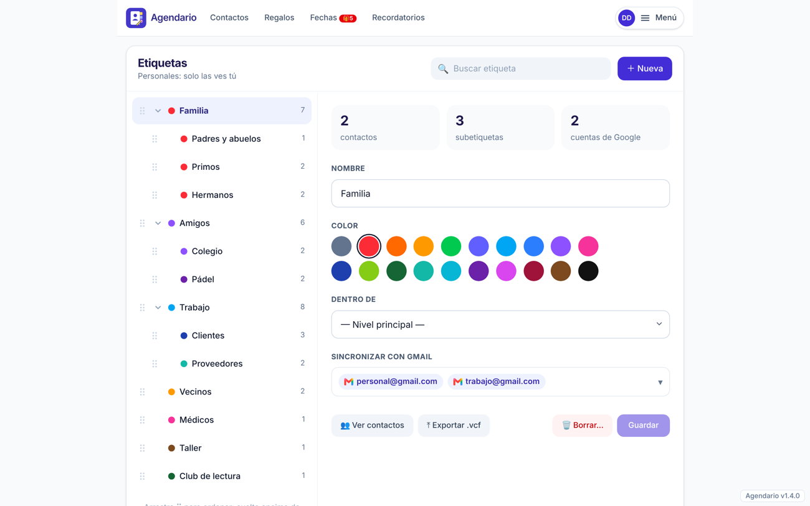
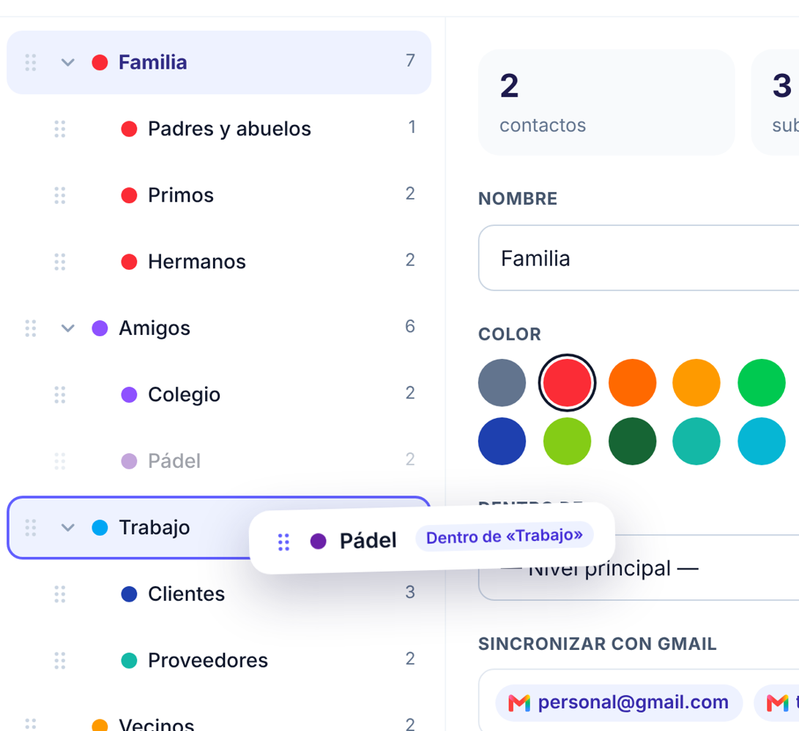
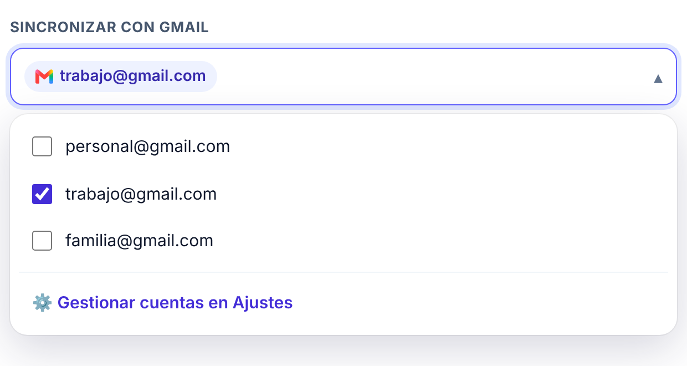
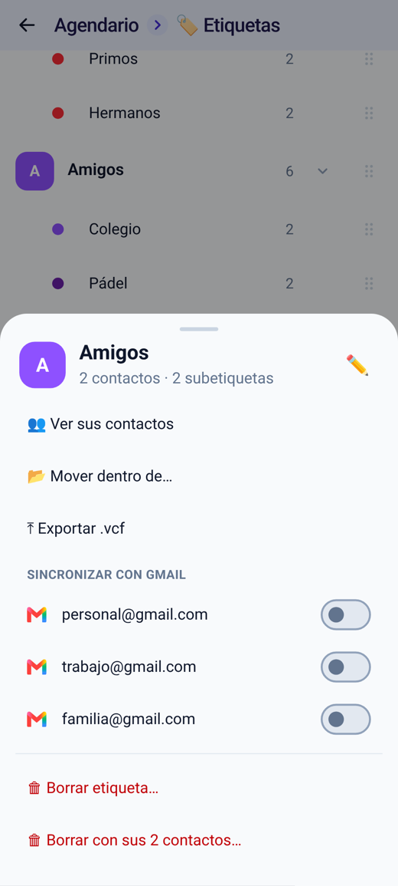
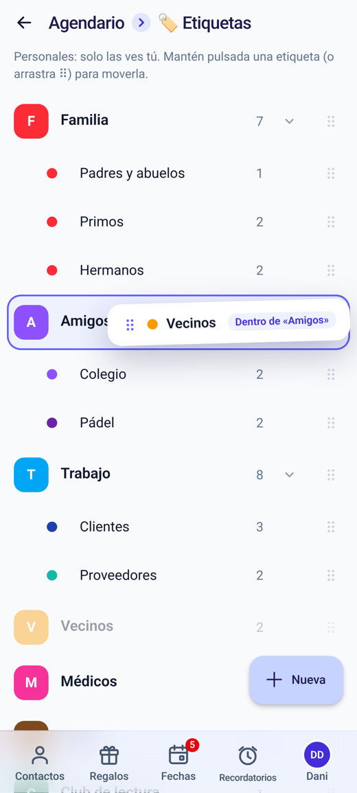

La 1.4.0 trae los favoritos, una pantalla de Etiquetas nueva que se ordena arrastrando, 20 colores y un diseño renovado de la app: banda de navegación fija, iconos más grandes, títulos grandes y el aviso de duplicados encima del menú.



En el ordenador y en el Fold abierto, a la izquierda está el árbol de etiquetas y, a la derecha, todo lo de la elegida con letra grande: cuántos contactos, subetiquetas y cuentas de Google tiene, su nombre, su color, «Dentro de», Sincronizar con Gmail y los botones Ver contactos, Exportar .vcf y Borrar… (solo la etiqueta o también sus contactos). Los cambios de nombre, color y «Dentro de» se guardan con Guardar. Con «＋ Nueva» creas una etiqueta.


Las cuentas de Google de cada etiqueta salen como fichas en una sola línea; al tocarla se abre un desplegable con una casilla por cuenta. Si una subetiqueta ya entra por su etiqueta madre, su casilla sale marcada y bloqueada («por Familia»).

A los diez de siempre se suman azul marino, lima, verde bosque, turquesa, cian, berenjena, fucsia, granate, marrón y negro. En modo oscuro, los tonos oscuros se aclaran para que se vean.

